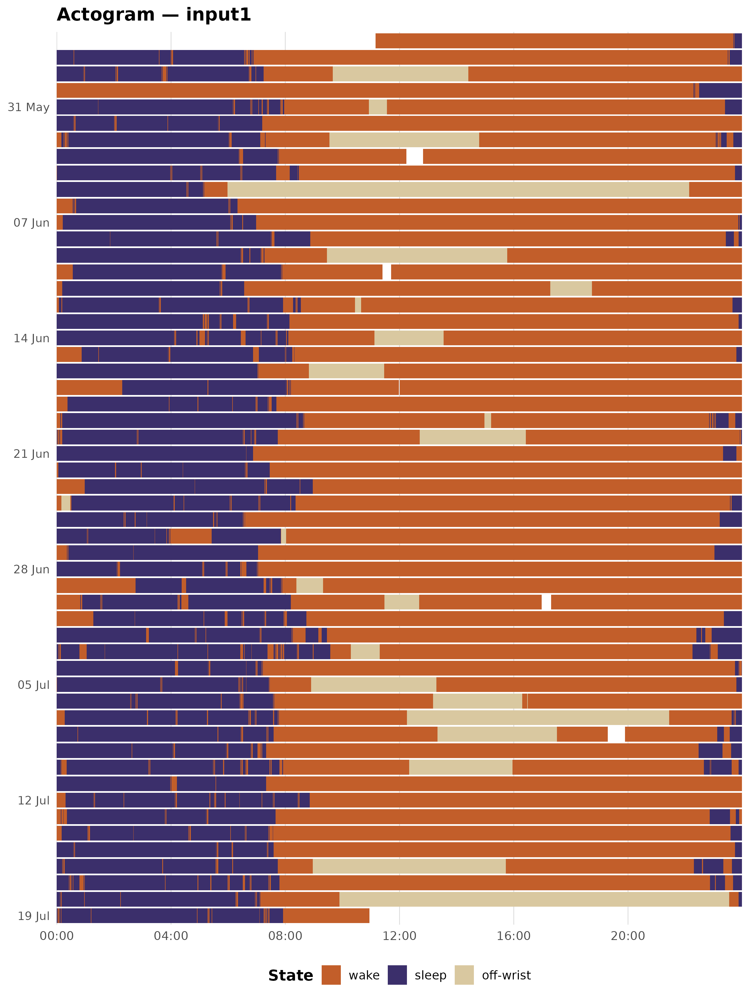
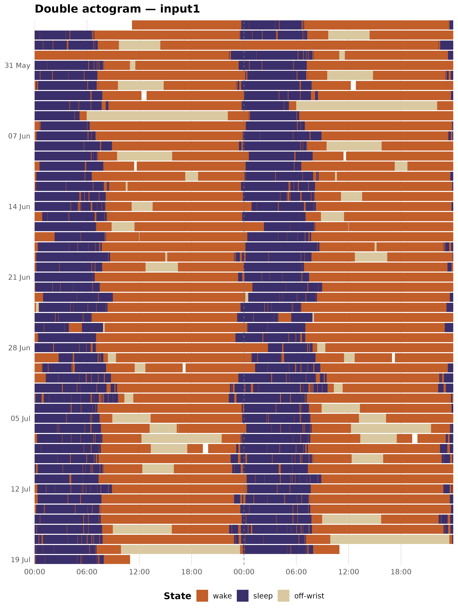
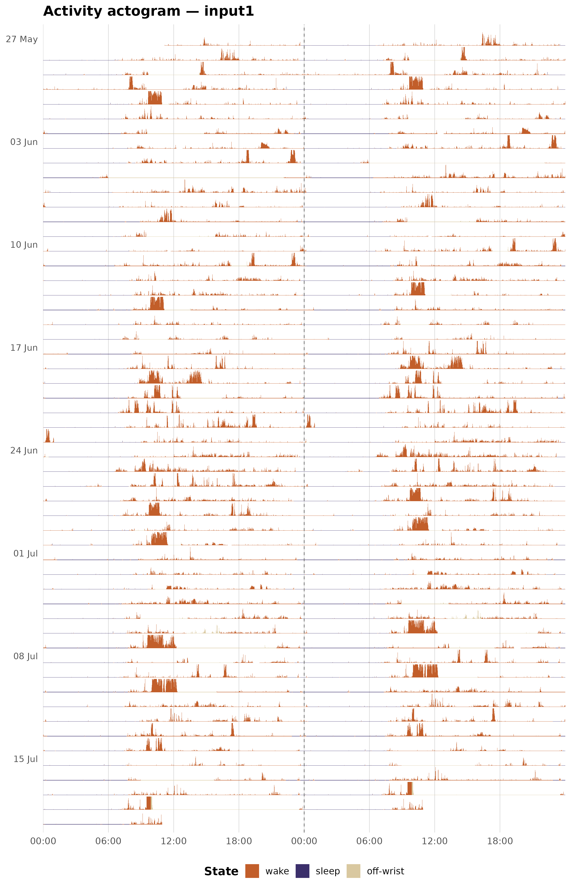
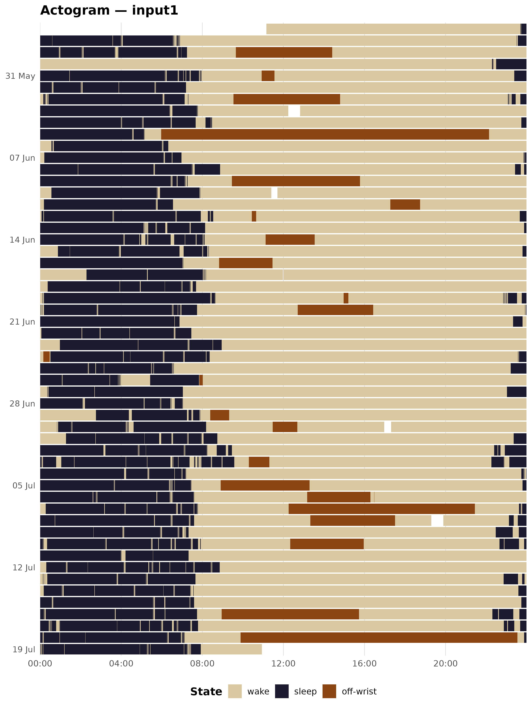
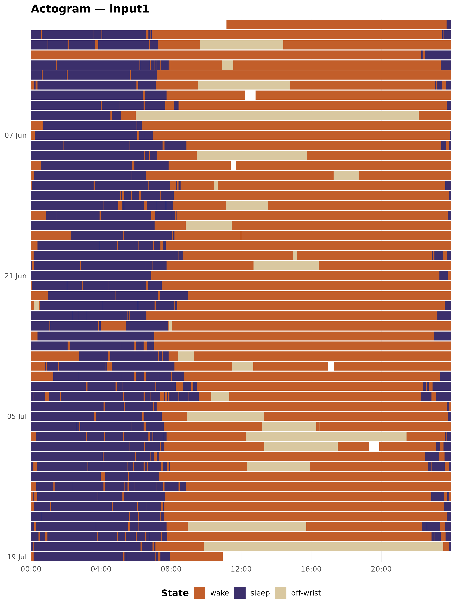
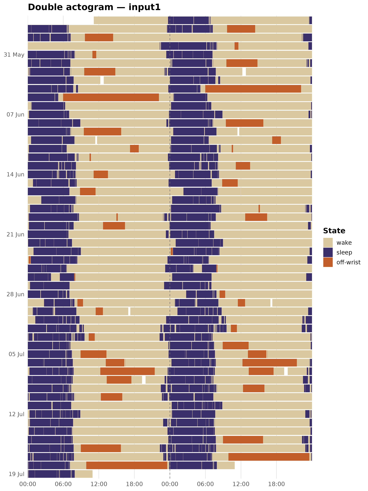
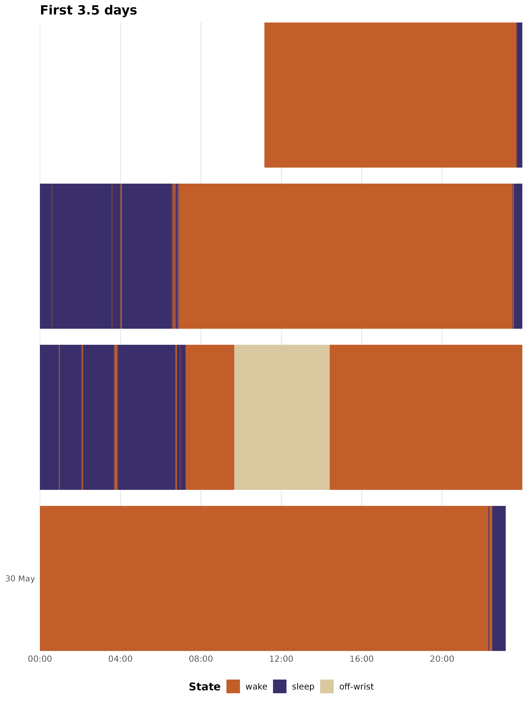

An actogram is the standard visualisation for wrist actigraphy data. It lays out the full epoch-level state sequence as a raster – one row per calendar day, time of day on the x-axis – so that a recording spanning weeks can be read at a glance. zeitR provides three actogram variants:
| Function | Format | Best for |
|---|---|---|
plot_actogram() |
Single column, 24 h | Overview, presentations |
plot_actogram_double() |
Double-plotted, 48 h | Phase drift, phase assessment |
plot_actogram_activity() |
Double-plotted + activity bars | Intensity + state simultaneously |
All three accept either a zeitr_result list from the
pipeline or a bare tibble with datetime and
state columns.
Setup
The examples below use the ActTrust validation recording bundled with
zeitR, run through run_pipeline_native().
FILE <- system.file("extdata", "input1.txt", package = "zeitR")
TZ <- "America/Sao_Paulo"
result <- run_pipeline_native(FILE, tz = TZ, quiet = TRUE)
#> ℹ Reading input1.txt ...
#> ✔ [input1] Done. 52 main night(s), 0 secondary episode(s).Single-column actogram
plot_actogram() draws one row per calendar day with time
of day (00:00 to 24:00) on the x-axis. The oldest day is at the top,
following standard chronobiology convention. Rows are labelled every
seven days by default.
plot_actogram(result, tz = TZ)
The dark purple band running through the centre of each row is the main sleep period. The amber gaps are naps; the terracotta blocks are off-wrist episodes.
Double-plotted actogram
plot_actogram_double() uses the classic double-plot
format from chronobiology: each recording day appears
twice – in the left column of its own row (x = 00:00 to
24:00) and in the right column of the row above (x = 24:00 to 48:00). A
dashed vertical line marks the 24 h boundary.
When the sleep band drifts diagonally across rows, that drift reflects day-to-day changes in circadian phase. A stable schedule appears as a straight vertical band; a free-running rhythm traces a slanted line.
plot_actogram_double(result, tz = TZ)
Activity double-plotted actogram
plot_actogram_activity() keeps the double-plot layout
but replaces filled tiles with vertical bars. Each bar’s height is
proportional to the raw ZCMn activity count; bars are coloured by
sleep/wake state. This lets you read both the intensity of activity and
the state classification from a single plot.
Bar heights are capped at the 99th percentile of non-zero epochs by
default (activity_cap_quantile = 0.99), so a handful of
outlier bursts do not compress the rest of the range. Zero-activity
epochs (sleep, off-wrist) receive a thin 2% baseline stub so they remain
faintly visible rather than disappearing entirely.
plot_actogram_activity(result, tz = TZ)
Colour customisation
Inspecting the default palette
actogram_colours() returns the named hex vector used as
the default palette across all three functions. Printing it is the
quickest way to see the current defaults before overriding them.
actogram_colours()
#> wake sleep nap off-wrist
#> "#C25E2A" "#3B2F6B" "#F0A500" "#D9C8A0"Overriding individual colours
Pass a named character vector to the colours argument.
You only need to supply the states you want to change; unnamed states
keep the default.
my_cols <- actogram_colours()
my_cols["sleep"] <- "#1C1A2E" # darker midnight
my_cols["off-wrist"] <- "#8B4513" # saddle brown
plot_actogram(result, tz = TZ, colours = my_cols)
Suppressing naps
If your recording has no naps, or you want to simplify the legend, you can drop the nap level by providing only three colours:
plot_actogram(result, tz = TZ,
colours = c(wake = "#D9C8A0", sleep = "#3B2F6B",
"off-wrist" = "#C25E2A"))Date labels and font size
date_label_every controls how many rows share a single
y-axis tick. The default is 7 (one tick per week). Reduce
it for shorter recordings or increase it for very long ones.
# Label every 14 days
plot_actogram(result, tz = TZ, date_label_every = 14L)
base_size sets the base font size passed to
theme_minimal():
plot_actogram(result, tz = TZ, base_size = 11) # smaller text
plot_actogram(result, tz = TZ, base_size = 16) # larger text (presentations)Adding ggplot2 layers
All three functions return a standard ggplot object, so
you can extend them with any ggplot2 layer or theme override:
plot_actogram_double(result, tz = TZ) +
theme(legend.position = "right")
Working with a bare tibble
The functions accept any tibble with datetime (POSIXct)
and state (integer) columns – no pipeline required. This is
useful if you have data in a format other than a
zeitr_result.
# Subset a few weeks from result$data and plot directly
sub <- result$data[1:5040, ] # first 3.5 days for illustration
plot_actogram(sub, tz = TZ, title = "First 3.5 days")
The state column should use zeitR’s integer coding:
0 = wake, 1 = sleep, 4 = off-wrist, 7 = nap.
Choosing between the three variants
Use
plot_actogram()when you want a compact overview – one row per day, simple state raster. Good for reports and presentations.Use
plot_actogram_double()when you want to assess circadian phase drift across the recording. The 48 h window makes diagonal drift in the sleep band visible at a glance.Use
plot_actogram_activity()when activity intensity matters – for example, when comparing sedentary and active participants, or checking whether an unexpectedly short TST reflects genuine low activity or a classification artefact.
Next steps
-
vignette("sleep-analysis")– CSPD pipeline walkthrough -
vignette("vallim-pipeline")– Vallim classification rule set -
?compute_sleep_metrics,?compute_cpd_metrics– day-type sleep summary and chronotype metrics -
?export_hypnogram– export epoch-level staging to hypnoR -
?label_states– convert integer state codes to a human-readable factor